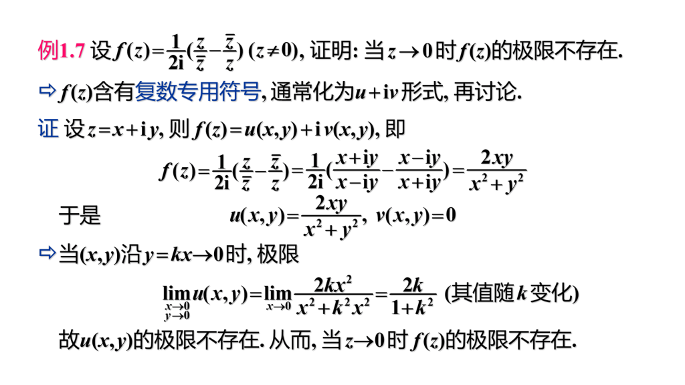
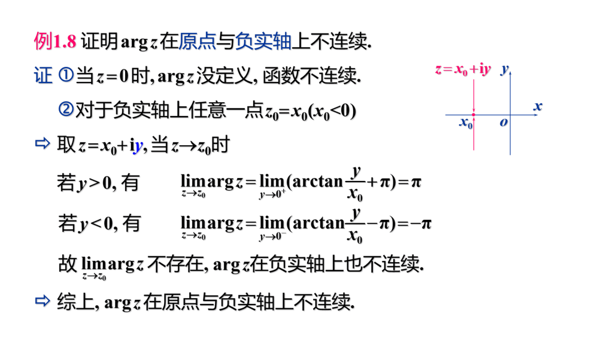
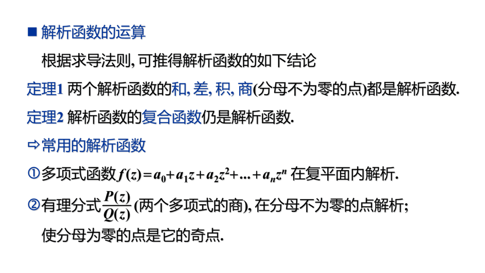
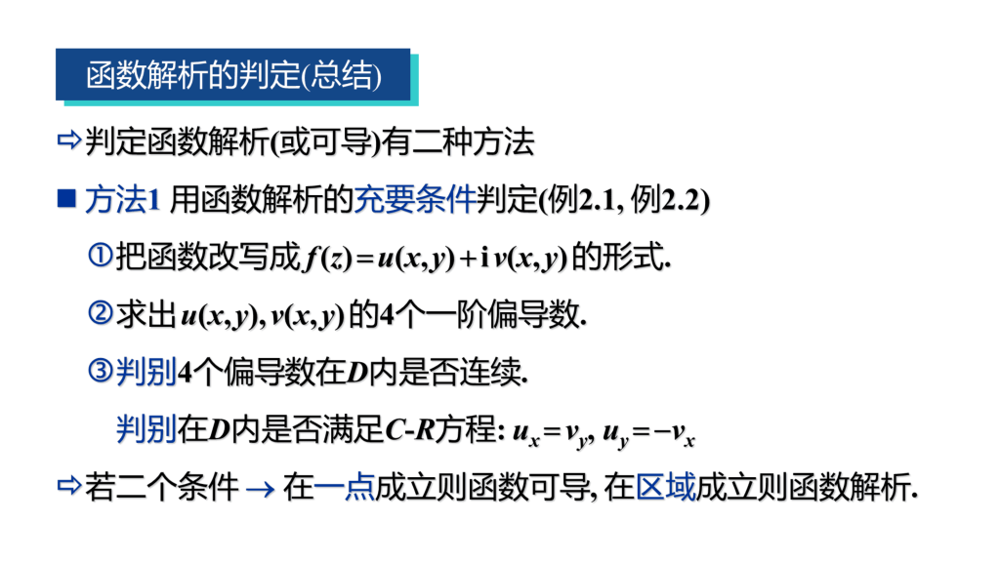
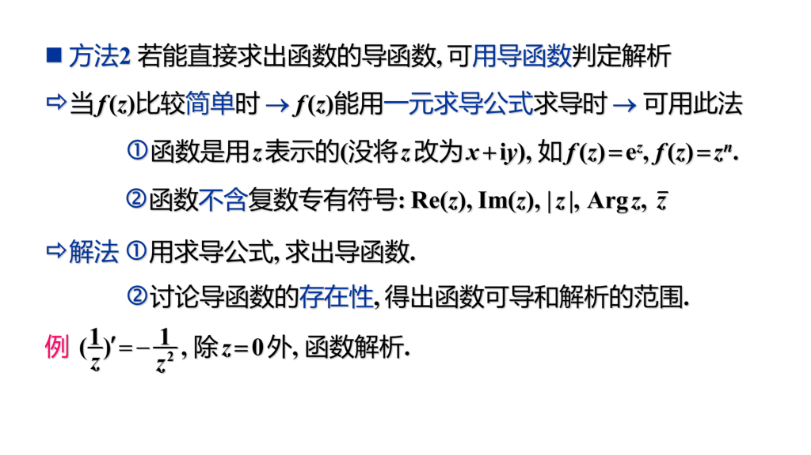
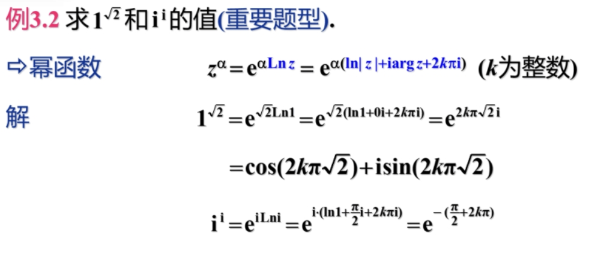

隐身术第二课堂。
第一章 复数与复变函数
$\S 1.1$ 复数及其几何表示
复数可以用点 / 向量 / 矩阵表示。
$Argz$ 是复数的辐角，$argz$ 是辐角在 $(-\pi, \pi]$ 中的值，又称为辐角的主值（$\left | z\right | = 0$ 时辐角无意义）。$Argz = argz + 2k\pi$。
复数 $z = x + iy = r(\cos\theta + i\sin\theta) = re^{i\theta}$。
复数 $n$ 次幂 $z^n = r^ne^{in\theta} = r^n(\cos n\theta + i\sin n\theta)$
复数 $n$ 次方根 $w = \sqrt[n]{z} = \sqrt[n]r(\cos \dfrac{\theta + 2k\pi}{n} + i\sin \dfrac{\theta + 2k\pi}{n})$，$k$ 从 $0$ 取到 $n - 1$ 时，对应会有 $n$ 个不同的方根。
表示复数的平面称为复平面，表示复数的球面称为复球面。
某复数对应的球面上的点，复平面上的点和复球面的 $N$ 极三点共线。（除 $N$ 极外，球面和平面上的点一一对应）
我们在复平面上引入一个 $\infty$ 点与球面 $N$ 极相对应，并将复平面加上无穷远点称为扩充复平面，与扩充复平面一一对应的平面称为复球面，没有 $\infty$ 的复平面称为 （有限）复平面。
对于复数 $\infty$，其实部，虚部，幅角均没有意义，其模长为 $\infty$，并且四则运算与实数 $\infty$ 相同。
$\S 1.2$ 复变函数
复变函数就是变量为复变量的函数（可能一对一，可能一对多）。
区域的概念同二元函数中的概念，略。
对于连续曲线 $C$ 有 $x = x(t), y = y(t)$，则称$z(t) = x(t) + iy(t)$ 为平面曲线的复数表示式。若 $x’(t), y’(t)$ 均连续且不同时为 $0$，则称 $z(t)$ 为光滑曲线。由几段光滑曲线联接而成的曲线称为按段光滑曲线。
自身无重点的曲线称为简单曲线。起点和重点重合的简单曲线称为简单闭曲线。
若区域 $D$ 内任意简单简单闭曲线的内部都属于 $D$，则称 $D$ 为单连通域，否则称为多连通域。
复变函数可化为两个实变函数相加，求复变函数的极限 / 连续 / 有界问题也可以化为两个实变函数的极限 / 连续 / 有界问题。
第一章 例题精选


第二章 解析函数
$\S 2.1$ 解析函数的概念
可导必连续，连续未必可导（同二元函数）
复变函数求导与一元实变函数相同
若 $w = f(z)$ 在 $z_0$ 及 $z_0$ 的领域内处处可导，则称 $f(z)$ 在 $z_0$ 解析，$z_0$ 称为解析点。
若 $f(z)$ 在区域 $D$ 内每一点都解析，则 $f(z)$ 是 $D$ 内的解析函数。
若 $f(z)$ 在 $z_0$不解析，称 $z_0$ 为 $f(z)$ 的奇点。
注意以下解析和求导的区别，可导要求某个点，解析要求的是某点及邻域。
在某点处，解析必可导，可导未必解析。
在某区域内，解析与可导等价。
在某区域内，判断解析性往往要靠求导去判断（若是看作一元函数，直接求导解决，若是看作二元函数，在证明不可解析时可以化作二元函数极限不存在来求）。

$\S 2.2$ 函数解析的重要条件
函数 $f(z) = u(x, y) + iv(x, y)$ 在点 $z = x + iy$ 处可导的充要条件是：
$u(x, y)$ 和 $v(x, y)$ 在 $(x, y)$ 可微
在点 $(x, y)$ 满足柯西-黎曼方程：$\dfrac{\partial u}{\partial x} = \dfrac{\partial v}{\partial y},\dfrac{\partial u}{\partial y} = -\dfrac{\partial v}{\partial x}$
关于可导和可微：在一元函数中，它们互为充要条件，在多元中可微是可导的必要条件，可导不一定可微。
由于在某一区域内，函数解析与可导等价，函数 $f(z) = u(x, y) + iv(x, y)$ 在区域 $D$ 内解析的充要条件是：
$u(x, y)$ 和 $v(x, y)$ 在 $D$ 内可微
满足柯西-黎曼方程：$\dfrac{\partial u}{\partial x} = \dfrac{\partial v}{\partial y},\dfrac{\partial u}{\partial y} = -\dfrac{\partial v}{\partial x}$
值得一提的是，当满足该条件时，$f’(z) = \dfrac{\partial u}{\partial x} + i\dfrac{\partial v}{\partial x} = \dfrac{1}{i}\dfrac{\partial u}{\partial y} + \dfrac{\partial v}{\partial y}$
讨论函数解析性，需证明函数可微，主要有以下两种方法：
- 用可微的定义：$\Delta u = A_1\Delta x + B_1\Delta y + o(\rho)$（较难，不推荐）。
- 用可微的充分条件，判断 $u(x, y)$，$v(x, y)$ 的偏导数连续来证明可微。


$\S 2.3$ 初等函数
复变量的初等函数和实变量的基本相同，但个别区别较大。
指数函数
$w = e^z = e^{x + iy} = e^x(\cos y + i\sin y)$，且满足原有的求导公式。
注意区别的是 $w = e^z$ 是以 $2k\pi i$ 为周期的函数。
指数函数在复平面内处处解析。
对数函数（区别较大）
指数函数 $e^w = z$ 的反函数 $w = f(z)$ 称为对数函数，记作 $w = Ln z$。
由 $e^{u + iv} = e^ue^{iv} = e^u(\cos v + i\sin v)$，我们有 $u = ln|z|,v = \theta + 2k\pi = Arg z$。故 $Lnz = ln|z| + iArgz = ln|z| + iargz + 2k\pi i$。
记 $lnz = ln|z| + iargz$ 为 $Lnz$ 的主值。对于给定不同的 $k$ 所形成的不同 $Lnz$ 称为其中一个分支。$lnz$ 满足原有的求导公式。
注意复数 $z$ 的模长只和实部 $u$ 有关。
此时对数函数的积商公式仍然成立 $Lnz_1z_2 = Lnz_1 + Lnz_2,Ln\dfrac{z_1}{z_2} = Lnz_1 - Lnz_2$。
但是 $n$ 次幂和 $n$ 次方根的对数公式不再成立。
由于 $Lnz^n = nln|z| + inargz + 2k_1\pi i$ 而 $nLnz = nln|z| + inargz + n2k_2\pi i$ 后面的 $2\pi i$ 的系数不同，故不相等。
由于$ln|z|$ 除了原点外处处解析，而 $argz$ 在原点和负实轴上不连续，故对数函数的主值 $lnz$ 在除去原点和负实轴的平面上连续，同理 $Ln z$ 的各个分支在除原点和负实轴的复平面上解析。
幂函数
$w = z^n$ 是复平面内的单值解析函数，$w = z^{-n}$ 除原点外是单值解析函数（$n \in \N$）。
$w = z^\alpha = e^{\alpha Lnz} = e^{\alpha(ln|z| + iargz)}e^{2k\alpha \pi i}$，不难发现如果 $\alpha$ 是整数，则 $w$ 必是单值函数，但 $\alpha$ 取小数时，$w$ 可能是多值函数。
由于 $Lnz$ 的各分支在除去原点和负实轴的平面上是解析的，所以 $w = z^{\alpha}$ 的各分支在除去原点和负实轴的平面上是解析的（注意多值函数是不可解析的）。
幂函数的导数和之前相同。

三角函数
由欧拉公式，易得 $\sin z = \dfrac{e^{iz} - e^{-iz}}{2i}$，$\cos z = \dfrac{e^{iz} + e^{-iz}}{2}$。
以前学过的三角函数公式全都适用。
三角函数在复数域是无界函数。
$\sin z$ 是奇函数，$\cos z$ 是偶函数，且它们依然是以 $2\pi$ 为周期的。
求导和之前相同，且在整个复平面上解析。